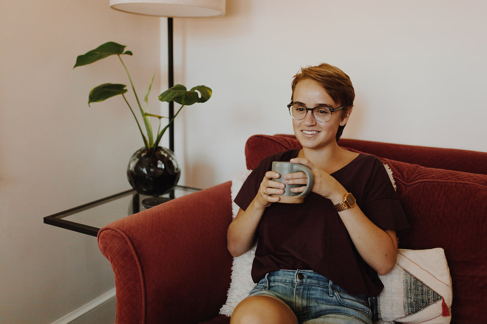
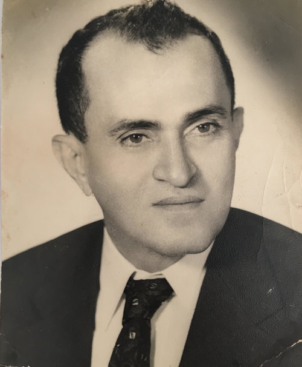
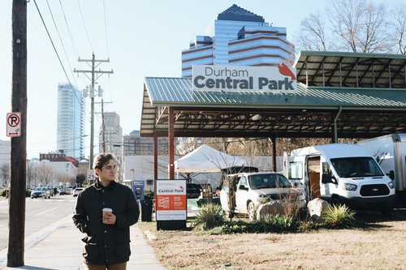

Meet the Boss Lady
Gabriela Kavanaugh is the owner and roaster of Caballo Rojo Coffee. Blazing her own trail as a new coffee roaster, Gabi is excited about all this coffee adventure will teach her. Throughout this process thus far there have been new relationships made with farmers, importers, and customers growing Gabi's definition of community. Her biggest supporter and the one encouraging to dream big is her loving and fun husband Dustin
History
Caballo Rojo is deeply rooted in Gabi's Latin American heritage. In Venezuela in the late 60's Gabi's grandfather started his own roasting company which grew into a coffee empire. The name of his roastery was Caballo Rojo and he used this company to provide for his six children while investing in his community. He created jobs, connected with farmers and implemented the values of giving back and working with excellence. However with his unexpected death at a young age the coffee company was soon taken over by investors and things changed for the family. The effects of his of company didn't stop there, but lead to a passion that would continue for generations.
Giving back
Caballo Rojo Coffee is dedicated to making a difference in this world. Our plan is to continue to build direct trade relationships, become an integral part of our community and give an ever increasing percentage of our income to the International Justice Mission.
Every month Gabi gives free coffee to her local church for their volunteers. Her church is an integral part in the Durham Community and many of it’s members are involved in foster care, homeless ministry and prison ministry, thus a portion of our proceeds is given monthly to support the continued service of our Durham Family.